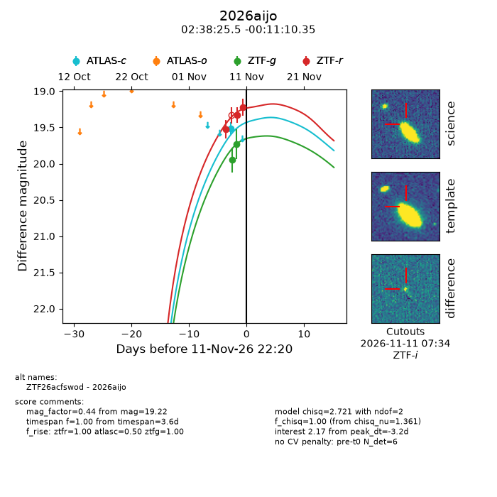
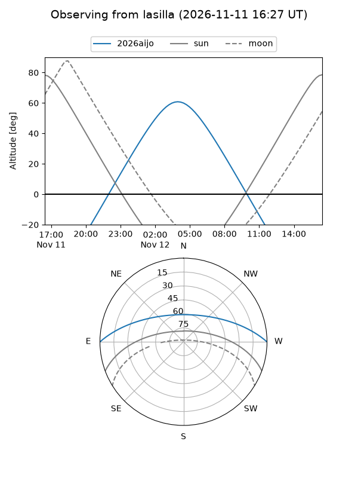
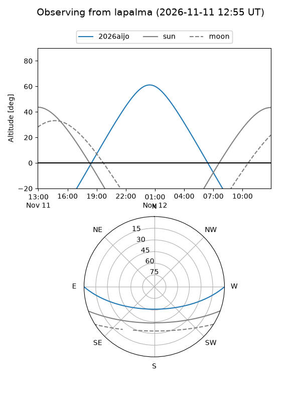
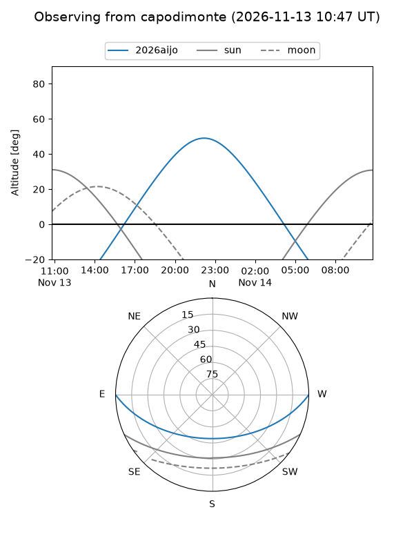
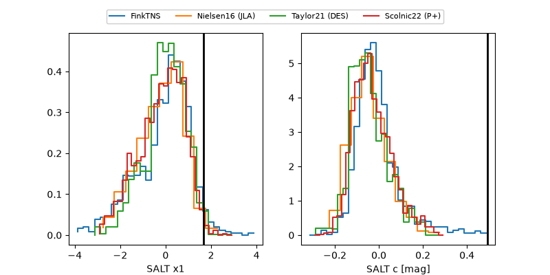

2026aijo
Target 2026aijo at 2026-11-11 22:22
Aliases and brokers:
FINK-ZTF: ztf.fink-portal.org/ZTF26acfswod
Lasair-ZTF: lasair-ztf.lsst.ac.uk/objects/ZTF26acfswod
ALeRCE-ZTF: alerce.online/object/ZTF26acfswod
YSE-PZ: ziggy.ucolick.org/yse/transient_detail/2026aijo
TNS name: wis-tns.org/object/2026aijo
Direct TNS query: direct search
alt names
ZTF26acfswod (ztf,fink_ztf)
2026aijo (tns,yse)
Coordinates:
equatorial (ra, dec) = 39.6063,-0.18621
equatorial (HMS+DMS) = 02:38:25.52,-00:11:10.35
galactic (l, b) = (170.9969,-52.77256)
Flags:
peak dt: -3.2
Photometry:
last atlasc=19.51, ztfg=19.73, ztfr=19.22
1 atlasc, 2 ztfg, 3 ztfr detections
Lightcurve

Visibility



Additional plots
